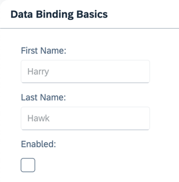

Step 4: Two-Way Data Binding
sap.m.Input fields. We're also adding a check box control to enable or
disable both input fields. This setup illustrates a feature known as "two-way data binding". As the view now contains more controls, we're
also moving the view definition into an XML file.Preview

Coding
You can view and download all files in the Demo Kit at Data Binding - Step 4.
-
Replace the content of the
App.view.xml filewith the following content:webapp/view/App.view.xml
<mvc:View xmlns="sap.m" xmlns:form="sap.ui.layout.form" xmlns:mvc="sap.ui.core.mvc"> <Panel headerText="{/panelHeaderText}" class="sapUiResponsiveMargin" width="auto"> <form:SimpleForm editable="true" layout="ColumnLayout"> <Label text="First Name"/> <Input value="{/firstName}" valueLiveUpdate="true" width="200px" enabled="{/enabled}"/> <Label text="Last Name"/> <Input value="{/lastName}" valueLiveUpdate="true" width="200px" enabled="{/enabled}"/> <Label text="Enabled"/> <CheckBox selected="{/enabled}"/> </form:SimpleForm> </Panel> </mvc:View> Replace the content of the
data.jsonfile in themodelfolder with the following content:webapp/model/data.json
{ "firstName" : "Harry", "lastName" : "Hawk", "enabled" : true, "panelHeaderText" : "Data Binding Basics" }After these changes, refresh the application preview and select or deselect the checkbox. You'll notice that the input fields are automatically enabled or disabled in response to the state of the checkbox.
It is clear that we haven't written any code to transfer data between the user interface and the model, yet the
Inputcontrols are enabled or disabled according to the state of the checkbox. This behavior results from the fact that OData models and JSON models implement two-way data binding. For JSON models, two-way binding is the default behavior. For more information, see Binding Modes.Two things are happening here:
-
Data binding allows the property of a control to derive its value from any suitable property in a model.
-
SAPUI5 automatically handles the transport of data from the model to the controls and back from the controls to the model. This is called two-way binding.
-
Parent topic: Data Binding Tutorial
Previous: Step 3: Create Property Binding